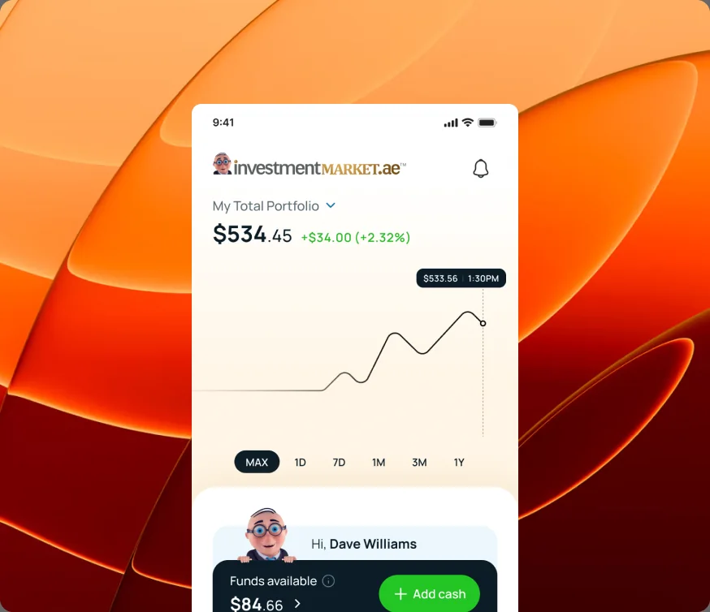

Component library
Every block below is rendered from the real partials in src/. Copy the markup from the matching file, not from this page.
Colors
Gradients
Typography
.ux-h1-display (90 / 64 / 44)
We design decisions
.ux-h1 (64)
Design Insights
.ux-h2 (50 / 40 / 32)
Outcomes we've delivered
.ux-h2 with .ux-highlight
Design Insights
.ux-h3 (30 / 26 / 22)
UX strategy workshop
.ux-h3-small (25)
Meet the Author
.ux-body-20 (20 / 18 / 17)
Product, web, and app design that starts with finding what's holding growth back.
.ux-body-18
Find what's costing you pipeline and activation before you redesign.
.ux-accent (Besley)
Digital Experience Agency · Dubai
Buttons
Eyebrow and section header
Outcomes we've delivered
Optional intro line under the title.
Services built for B2B growth
Chips and tags
Form field
Stats
- 08+Years in Business
- 50+Agency Partners
- 450+Projects Designed
Person

Saravanan Vijayakumar
LinkedInFounder and CEO,
Squaircle · AI Transformation Studio
USA · India
Cards

Compact variant with a 25px title
7 UX audit findings we see on almost every ecommerce site

FAQ
A UX-led design studio for B2B teams.
Add answer here.
Industry cards

SaaS and AI
We agree the business metric first, diagnose what's blocking.
21Projects

FinTech
We agree the business metric first, diagnose what's blocking.
21Projects

eCommerce
We agree the business metric first, diagnose what's blocking.
21Projects
B2B Events
We agree the business metric first, diagnose what's blocking.
21Projects
Sections
- Site header
sections/site-header - Site footer
sections/site-footer - Home hero + logo marquee
sections/hero-home, logo-marquee - Listing hero
sections/hero-listing - Case study hero
sections/hero-case-study - Article hero
sections/hero-article - Light hero
sections/hero-light - Outcomes
sections/outcomes - Featured story (video)
sections/featured-story - Approach / principles
sections/approach - Services
sections/services - Process
sections/process - Engagement models
sections/engagement - Filter bar
sections/filter-bar - Detail layout + TOC
sections/detail-layout, components/toc - Article body
sections/article-body - Related row
sections/related-row - Logo grid + presence
sections/logo-grid - Story split
sections/story-split - Team + leaders
sections/team - Beliefs grid
sections/beliefs - Booking CTA (two versions)
sections/booking-cta